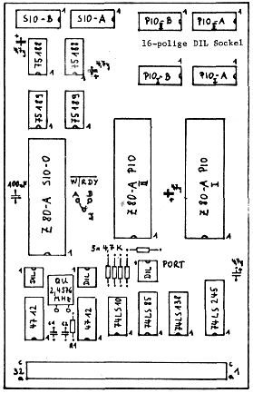

80-Bus Journal |
Dezember 1983 · Ausgabe 12 |
auf einmal verwalten kann. 31K + Directory-Eintrag ergeben dieses Maximum. Die neue Version soll 48K verwalten können) ,dessen Schreib- und Lesezeit abgestoppt wurde.
Ohne Skewfaktor und beim Auslassen von 1 und 2 Sektoren betrug die Zeit ca 31 Sekunden. Bei einem Faktor 3 wurde sie drastisch auf die Hälfte gesenkt. Größere Faktoren ließen die Zeit wieder ansteigen. Der im Formatierprogramm benutzte Faktor scheint also für EMDOS optimal zu sein.
Wenn wir die Tabelle betrachten, stellen wir fest, daß bei einer Diskumdrehung statt eines Sektors nun 4 Sektoren gelesen werden können.
Das Lesen eines Speicherbereichs von 1K dauert 8 Sekunden (vom Drücken der Taste bis zur Meldung auf dem Schirm), 31K benötigen 15 Sekunden. Man sieht, daß das Suchen im Directory und damit verbundene Verwaltungsarbeit, vor allem aber das Anlaufen des Motors und die Bereitschaft des Laufwerks eine Menge Zeit schlucken; das Lesen der Sektoren selbst geschieht recht schnell.
Das mc-Format sieht keinen Skew-Faktor vor. Dort werden hintereinander jeweils 4 Sektoren gelesen, ohne durch Rechenzeit zu unterbrechen. Die Geschwindigkeit bleibt so die gleiche, wenn vom mc-Rechner eine unserer Disketten gelesen wird, Umgekehrt müssen wir etwa die doppelte Lesezeit in Kauf nehmen. Das scheint mir kein großes Handikap.
Bei Single Density müßte folgende Tabelle mit dem Faktor 3 die günstigsten Ergebnisse bringen (ausprobiert habe ich sie nicht):
1 9 4 7 2 10 5 8 3 6
Tape- Operationen (W+R), die zumeist einen wirren Screen- Salat verursachen, arbeiten sauber, wenn man bei Nassys1 zuerst MC75 eingibt und anschließend 86. Bei Nassys3 anstatt der 86 eine 80.
Die CLD-Banked- EPROMkarte von Lampson ist teilweise verkehrt beschriftet. Es fehlt die Kennzeichnung der Position der Tantal-Elkos, außerdem sind die DIL- Schalter genau entgegengesetzt bezeichnet (16=1 und 1=16).
Rolf Kottke, ____ Berlin
In MC 10/82 ist bei der Beschreibung des CP/M-Monitors eine Initialisierungs, sowie eine Testroutine für SIO und PIO abgedruckt. Möglicherweise (ich kann es mir aber nicht vorstellen) gibt es noch eine andere Ausgabe von SIO- und PIO- Bausteinen, da diese Routinen die Portadressen anders verwenden. So wird jeweils Port 1+3 als Data und 2+4 als Control programmiert (richtig 1+2 und 3+4), und es hat mich viel Zeit gekostet, den Fehler nicht auf meiner IO-Karte, sondern im Programm aus MC zu finden.
Quellenangabe: N1- Schaltplan; Z80- Pio- und Z80- SIO Technical Manual; TI- Pocket- Guide Nr.1 und 2; mc Nr.10/82
Informationen zum Bestückungsplan:
| Portbelegung | |||
| PIO I | Data: | x4, | x5 |
| Cont: | x6, | x7 | |
| PIOII | Data: | x8, | x9 |
| Cont: | xA, | xB | |
| SIO | Data: | xC, | xD |
| Cont: | xE, | xF | |
| INT- Daisy Chain | ||
| SIO- | PIOI- | PIOII |
R1 (10 Mo) und C1, C2 (56 pF) nur einsetzen, wenn 4702 statt 4712 verwendet wird.
| Seite 23 von 28 |
|---|